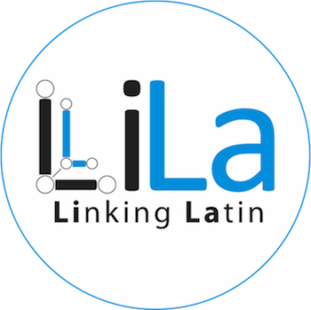
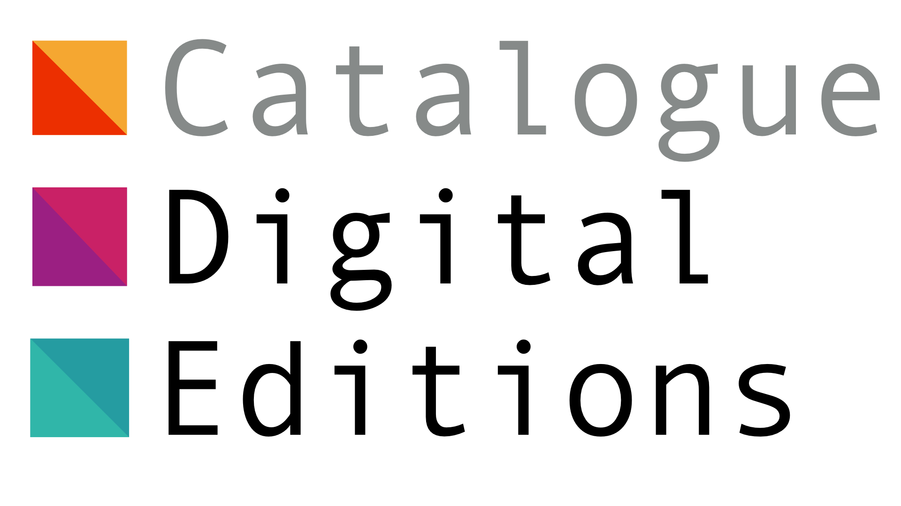
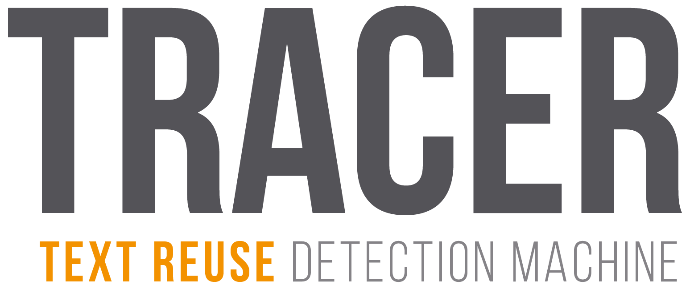

I'm a researcher working in interdisciplinary projects in Digital Classics (particularly Latin), Digital Scholarly Editing and Natural Language Processing. I've occasionally stepped out of my comfort zone to explore other fields of study, such as visual text analysis, digitisation (OCR and HTR) and stylometry.
I'm fluent in Italian, English and Dialeto Veronese, my native languages. I can hold conversations in Spanish and German, and speak basic French and Modern Greek (Κυπριακά).
Doctor of Philosophy (Ph.D), University College London | 2011-2018
Digital Humanities
Master of Arts (MA), King's College London | 2010-2011
Digital Humanities
Bachelor of Arts (BA Honours), King's College London | 2006-2009
Classics
Expansion and graph rendition of the Latin WordNet as part of the ERC project Linking Latin (LiLa).
Visiting Scholar at Università Cattolica del Sacro Cuore (Milano) | October-December 2017
Performed automatic text reuse detection analyses on the Summa Contra Gentiles of Thomas Aquinas.
Researcher at Georg-August-Universität Göttingen (Göttingen) | January 2015-September 2018
Contributor to the development of TRACER, an automatic text reuse detection engine for historical texts.
Research Associate at Universität Leipzig (Leipzig) | May 2013-December 2014
Coordinated a number of contracts for the digitisation of critical editions of classical texts.
Digital Library and Publications Assistant at Chatham House (London) | 2011-2013
Created some 15.000 catalogue records as part of the digitisation of the archive. Additionally, liaised with typesetters, printers, co-publishers, distributors, online booksellers and information services (Amazon, Nielsen BookData, etc.), and handled copyright and permission requests for the Institute's scholarly publications.
A full CV is available on request. You can also find me on Linkedin.

2018-present. European Research Council (ERC) H2020 project aimed at linking linguistic resources for Latin using Linked Open Data standards.

2018-present. "Words of the Beast": a manual and computational study of the use of Latin in heavy metal lyrics.

2012-present. A collaboration with ÖAW ACDH to survey practice in digital scholarly editing.

2015-2018. Automatic text reuse detection engine for historical texts and languages, developed by the eTRAP Research Group.
Journal articles
- Franzini, G., Terras, M., Mahony, S. (2019) 'Digital Editions of Text: Surveying User Requirements in the Digital Humanities', Journal on Computing and Cultural Heritage (JOCCH) - Special Issue on Evaluation of Digital Cultural Resources, 12(1), pp. 1-23. DOI: 10.1145/3230671
- Franzini, G., Kestemont, M., Rotari, G., Jander, M., Ochab, J. K., Franzini, E., Byszuk, J., Rybicki, J. (2018) 'Attributing authorship in the noisy digitized correspondence of Jacob and Wilhelm Grimm', Frontiers in Digital Humanities, 5(4). DOI: 10.3389/fdigh.2018.00004
- Jänicke, S., Franzini, G., Faisal, C., Scheuermann, G. (2017) 'Visual Text Analysis in Digital Humanities', Computer Graphics Forum, 36(6), pp. 226-250. DOI: 10.1111/cgf.12873
- Moritz, M., Pavlek, B., Franzini, G., Crane, G. (2016) 'Sentence Shortening via Morpho-Syntactic Annotated Data in Historical Language Learning', Journal on Computing and Cultural Heritage, 9(1). DOI: 10.1145/2810040
- Jänicke, S., Geßner, A., Franzini, G., Terras, M., Mahony, S., Scheuermann, G. (2015) 'TRAViz: A Visualization for Variant Graphs', Digital Scholarship in the Humanities, 30(suppl_1). DOI: 10.1093/llc/fqv049
- Berti, M., Almas, B., Dubin, D., Franzini, G., Stoyanova, S., Crane, G. (2015) 'The Linked Fragment: TEI and the encoding of text reuses of lost authors', Journal of the Text Encoding Initiative, 8. DOI: 10.4000/jtei.1218
Conference proceedings
- Franzini, G., Peverelli, A., Ruffolo, P., Passarotti, M., Sanna, H., Signoroni, E., Ventura, V., Zampedri, F. (2019) 'Nunc est aestimandum: Towards an evaluation of the Latin WordNet', Proceedings of the Sixth Italian Conference on Computational Linguistics (CLiC-it 2019). Bari, November 2019, 13-15. DOI: 10.5281/zenodo.3518774
- Passarotti, M., Cecchini, F. M., Litta, E., Franzini, G., Mambrini, F., Ruffolo, P. (2019) 'LiLa: Linking Latin – A Knowledge Base of Linguistic Resources and NLP Tools', 2nd Conference on Language, Data and Knowledge (LDK 2019). Leipzig, May 2019, 20-23. DOI: 10.5281/zenodo.3358550
- Franzini, G., Passarotti, M., Moritz, M., Büchler, M. (2018) 'Using and evaluating TRACER for an Index fontium computatus of the Summa contra Gentiles of Thomas Aquinas', Proceedings of the Fifth Italian Conference on Computational Linguistics (CLiC-it 2018). Torino, December 2018, 10-12. DOI: 10.5281/zenodo.3362130
- Büchler, M., Eckart, T., Franzini, G., Franzini, E. (2017) 'Mining and Analysing One Billion Requests to Linguistic Services', Proceedings of the IEEE International Conference on Big Data 2016 (IEEE BigData 2016). Washington DC, December 2016, 5-8. DOI: 10.1109/BigData.2016.7840979
- Jänicke, S., Franzini, G., Faisal, C., Scheuermann, G. (2015) 'On Close and Distant Reading in Digital Humanities: A Survey and Future Challenges. A State-of-the-Art (STAR) Report', Proceedings of the EuroVis 2015 Conference on Visualization (EuroVisSTAR 2015). Cagliari, May 2015, 25-29. DOI: 10.2312/eurovisstar.20151113
- Büchler, M., Franzini, G., Franzini, E., Moritz, M. (2014) 'Scaling Historical Text Re-Use', Proceedings of the IEEE International Conference on Big Data 2014 (IEEE BigData 2014). Washington DC, October 2014, 27-30. DOI: 10.1109/BigData.2014.7004449
- Almas, B., Babeu, A., Baumgardt, F., Berti, M., Cerrato, L., Crane, G., Franzini, G., Krohn, A. and Stoyanova, S. (2014) 'Cataloging for a Billion Word Library of Greek and Latin', Proceedings of the First International Conference on Digital Access to Textual Cultural Heritage (DATeCH 2014). Madrid, 19-20 May. DOI: 10.1145/2595188.2595190
- Berti, M., Franzini, G., Franzini, E., Celano, G. (2014) 'L’Open Philology Project dell’Università di Lipsia: per una filologia “sostenibile” in un mondo globale', Proceedings of the second AIUCD Annual Conference (AIUCD 2013). Padova, 11-12 December.
Book chapters
Forthcoming
Cecchini, F. M., Franzini, G., Passarotti, M. 'Verba Bestiae: How Latin conquered Heavy Metal', Multilingual Metal: Sociocultural, Linguistic and Literary Perspectives on Heavy Metal Lyrics (Emerald Studies in Metal Music and Culture). Emerald Publishing Limited.
- Franzini, G., Mahony, S., and Terras, M. (2016), 'A Catalogue of Digital Editions', In: Pierazzo, E. and Driscoll, M. J. (eds) Digital Scholarly Editing: Theories and Practices. Cambridge: Open Book Publishers. DOI: 10.11647/OBP.0095
- Büchler, M., Burns, P. R., Müller, M., Franzini, E., Franzini, G. (2014) 'Towards a Historical Text Re-use Detection', In: Biemann, C. and Mehler, A. (eds) Text Mining, Theory and Applications of Natural Language Processing. Springer International Publishing Switzerland. DOI: 10.1007/978-3-319-12655-511
Edited journal issues and volumes
Invited reviews
- Franzini, G. (2017) Spectateurs. Reviewed (in Italian) in RIDE: A Review Journal for Scholarly Digital Editions and Resources - Special Issue on Digital Text Collections, 6. DOI: 10.18716/ride.a.6.6
- Franzini, G. (2015) Digital Critical Editions by Daniel Apollon, Claire Bélisle, and Philippe Régnier (University of Illinois Press, 2014). Reviewed in Digital Scholarship in the Humanities, 30(4). DOI: 10.1093/llc/fqv025
User manual
- Franzini, G., Franzini, E., Bulert, K., Büchler, M., Moritz, M. (2016-ongoing). TRACER: An Automatic Text Reuse Detection Machine. DOI: 10.5281/zenodo.3362191
Italian translations
- Voyant Tools (2016) Voyant Tools is an open source web-based application that allows users to work with their own texts or existing text collections to perform basic text mining functions.
- Digital Medievalist Wikipedia page (2016) Digital Medievalist is an international web-based community for medievalists working with digital media.
- Textal: Text Analysis App (2013) Textal is a free smartphone app that allows you to analyse websites, tweet streams, and documents, as you explore the relationships between words in the text via an intuitive word cloud interface.
- EpiDoc Guidelines (2011) EpiDoc is an international, collaborative effort that provides guidelines and tools for encoding scholarly and educational editions of ancient documents.
Data-sets
- Franzini, G. (2018-ongoing) riley-latin-quotations: A manually-corrected version of the OCR'd Latin text of H.T. Riley's 'Dictionary of Latin and Greek Quotations, Proverbs, Maxims and Mottos, Classical and Mediaeval. Including Law Terms and Phrases', 1891. DOI: 10.5281/zenodo.1883092
- Franzini, G. et al. (2016) csel-dev: Corpus Scriptorum Ecclesiasticorum Latinorum - A machine-corrected version of the public domain volumes of the monumental collection of Latin Church Fathers. 10.5281/zenodo.854349
- Franzini, G. (2012-ongoing) Catalogue of Digital Editions. 10.5281/zenodo.1161425
- Franzini, G. (2019) *TBA* . University of Wuppertal, Wuppertal (Germany), December 17.
- Franzini, G., Passarotti, M. (2019) LiLa: Linking Latin. Piecing together a seemingly under-resourced language. Computer-Assisted Text Analysis for Resource-Scarce Literatures. University of Miami, Miami (USA), April 25.
- Franzini, G. (2019) Giovani esperienze anglo-tedesche nei centri di ricerca in Digital Humanities. Digital Humanities and Beyond: Prospettive per un Centro di Digital Scholarship for the Humanities a Torino. University of Torino, Torino (Italy), February 5.
- Franzini, G., Mambrini, F. (2018) What’s going on in Milan? Resources and Tools for Latin at the CIRCSE Research Centre. Text Encoding: Latinists looking for new synergies. Laboratoire d'Analyse Statistique des Langues Anciennes (LASLA), Liége (Belgium), November 8-9.
- Franzini, G., Andorfer, P. (2018) Der nächste Schritt? Linked Open Data und Visualisierung beim Catalogue of Digital Editions. MWW-Forschungsverbund and DARIAH-DE Experten-Workshop “Suchtechnologien". Goethe- und Schiller-Archiv, Weimar (Germany), May 25.
- Franzini, G. (2017) Catalogo di Edizioni Digitali: Per un’analisi dello status quo. Istituto Storico Italo-Germanico (FBK-ISIG), Trento (Italy), September 27.
- Franzini, E., Franzini, G. (2017) Brothers Grimm, Jane Austen and Paulus Orosius have one thing in common: the eTRAP research team and its DH projects. UCL Centre for Digital Humanities Seminar Series. University College London, London (UK), February 22.
- Franzini, G. (2016) Advancing machine-assisted intertextual research on historical data: The electronic Text Reuse Acquisition Project (eTRAP). Digital Humanities Lecture Series. University of Antwerp, Antwerp (Belgium), 23 November.
- Franzini, G. (2016) Grimms Märchen: Investigating an Intertextual Puzzle of Fairy Tales. Digital Scholarship Seminar. National University of Ireland, Galway (Ireland), 23 February.
€4.000, Co-applicant | 2018
Grant awarded by the Associazione Internazionale di Professori di Italiano (AIPI) Scuola Dottorandi call to organise and run a Digital Humanities summer school.
€20.000, Co-applicant | 2018
Grant awarded by the Campuslabor Digitisation Startup Funding call of the University of Göttingen for a research project on automatic text reuse detection.
€20.000, Co-applicant | 2016
Grant awarded by the Campuslabor Digitisation Startup Funding call of the University of Göttingen for a research project on automatically identifying authorship in the family correspondence of the Grimm brothers.
Introduction to the command line and NLP for Italian Studies.
Introduction to the command line and NLP for French Studies.
TRACER tutorials | University of Göttingen, 2015-2018
Seven tutorials on automatic text reuse detection with TRACER.
Teaching assistant | University College London, 2012-2013
Digital Humanities MA/MSc module on XML and XSLT.
AIUCD 2020, the ninth Annual Conference of the Italian Association of Digital Humanities (AIUCD).
First LiLa Workshop. Turn out: ca. 100 pp.
Freelance English editing
I'm occasionally able to provide English editing services. I have edited numerous academic papers, websites and miscellaneous documents (forms, statements, agreements). If you're writing in English and would like a native speaker to review your text, then I can help. Get in touch for details and availability.
Upcoming: Bari, IT
2019 Bologna, IT · Verona, IT · Utrecht, NL · Leipzig, DE · Miami, FL, USA · Vienna, AT · Torino, IT · Udine, IT · Poitiers, FR.
2018 Torino, IT · Liège, BE · Mexico City, MX · Hannover, DE · Weimar, DE · Antwerp, BE · Cologne, DE · Bari, IT.
2017 Innsbruck, AT · Milan, IT · Verona, IT · Trento, IT · Montréal, CA · London, UK · Rome, IT.
2016 Antwerp, BE · Vienna, AT · Venice, IT · Kraków, PL · Cologne, DE · Leipzig, DE · Galway, IE.
2015 Leicester, UK · Tartu, EE · Berlin, DE.
2014 Norman, OK, USA · Tbilisi, GE · Lausanne, CH · Lyon, FR.
2013 Padova, IT.